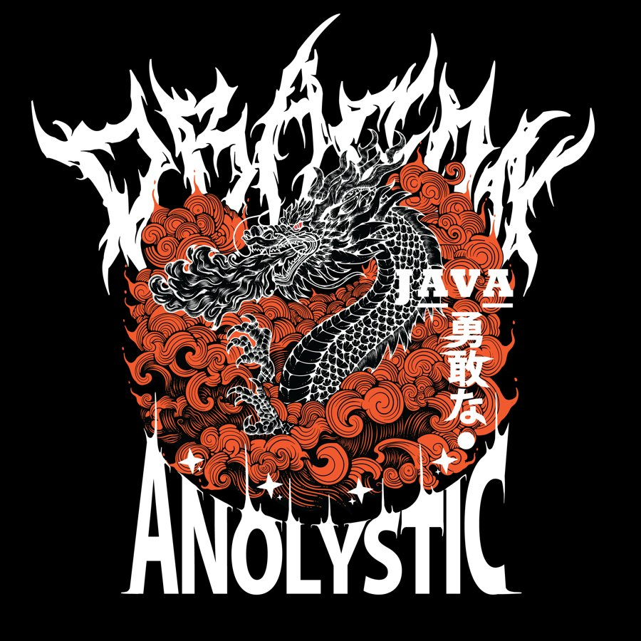
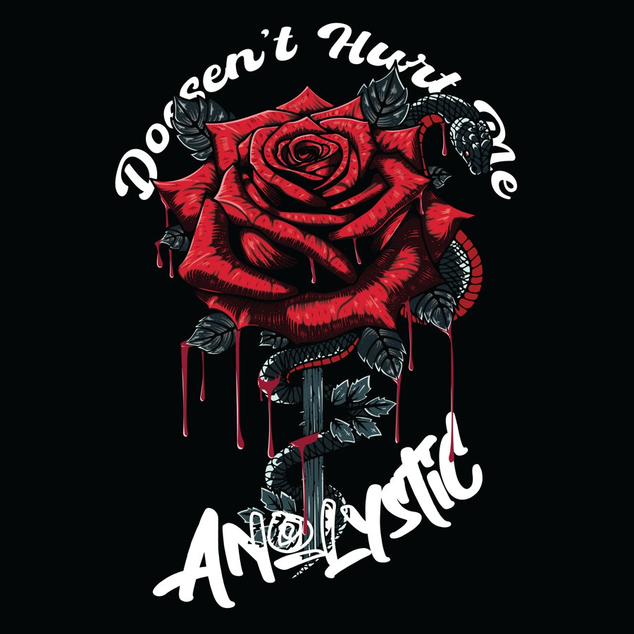

献
DROP OKT 2026
献
DROP OKT 2026
Limited Vol. 1
DEVOTION
Maks 200 edisi · 1 edisi rahasia bertanda tangan
— / 200 diterbitkan

Galeri Kita · NFT & Lore
Karya seni Anolystic tidak sekadar kain dan sablon. Setiap goresan memiliki nyawa dan filosofi mendalam. Kini kaos edisi Limited kami punya sertifikat keaslian digital NFT Anolystic Certified yang tercatat permanen di blockchain.
本物 On-Chain di BNB Chain
Tiap desain Limited maksimal 200 pcs dan tidak akan diproduksi ulang. Setiap pembeli mendapat 1 NFT bernomor edisi. NFT dicetak (mint) saat kaos terjual, jadi belum ada yang beredar sebelum drop dimulai.
献
DROP OKT 2026
Limited Vol. 1
Maks 200 edisi · 1 edisi rahasia bertanda tangan
— / 200 diterbitkan
Limited Vol. 2
Maks 200 edisi · 1 edisi rahasia bertanda tangan
— / 200 diterbitkan

薔 SEGERALimited Vol. 3
Maks 200 edisi · 1 edisi rahasia bertanda tangan
— / 200 diterbitkan
01
Beli kaos Limited (bayar dengan Rupiah).
02
Terima NFT bernomor edisi ke wallet kamu (gas fee ditanggung Anolystic).
03
Scan QR di label kaos untuk cek keasliannya kapan saja.
04
Bebas dijual ulang. Royalti 5% untuk brand (standar EIP-2981).
Kontrak NFT Anolystic Certified (ALTNFT), terverifikasi: 0xf481fA14111347Eed9Aa56fd16e6cfe132F161d8. NFT adalah sertifikat keaslian produk, bukan produk investasi.
DESAIN GENESIS 創世
Cerita di balik desain
 01
01
Genesis Drop 01
"Kebenaran Ditemukan Dalam Kegelapan." Jauh sebelum peradaban disilaukan oleh cahaya fana, ada mereka yang berani menutup mata untuk melihat realitas sejati. "Woman Satanic" bukanlah tentang pemujaan kejahatan, melainkan metafora dari pencarian enlightenment—pencerahan dari dalam diri sendiri.
Tanduk melengkung yang menyatu dengan mahkota di kepalanya merepresentasikan pemberontakan terhadap dogma yang membatasi. Ia tidak tunduk; ia berdiri sejajar dengan takdir. Rambutnya yang terurai panjang dan bebas menyiratkan jiwa yang tak bisa dikekang oleh aturan duniawi.
Perhatikan tangannya yang terkatup hening seperti berdoa. Ia merengkuh kontras terbesar umat manusia: spiritualitas yang murni terlahir bukan dari kepatuhan tanpa tanya, melainkan dari keberanian menelusuri rahasia paling gelap. Dan api abadi yang menyala di bawahnya, adalah simbol transformasi. Untuk merakit versi terbaik dari diri, kadang kita harus terlebih dulu hangus menjadi abu.
Kaos desain Genesis 01
150KKonsep desain ini berevolusi menjadi "Devotion", drop pertama Limited Vol. 1 yang dilengkapi NFT keaslian (lihat koleksi di atas).
Kaos desain Genesis ini tidak memiliki NFT keaslian.
 02
02
Genesis Drop 02
"Snapping Our Way Through Life." Tak semua revolusi harus dilakukan dengan otot menegang dan raut wajah menyeramkan. "Croc Club" hadir sebagai penyegar—sebuah antitesis dari kultur hustle yang menuntut kita untuk selalu terlihat sibuk dan sempurna.
Buaya dalam mitologi klasik sering digambarkan sebagai pemangsa yang sabar. Namun di jagat Anolystic, ia adalah predator dengan gaya swag-nya sendiri; bersandar terlentang memandangi langit, menertawakan roda kehidupan yang terus berputar. Balon kata "Snap!" yang menyembul merupakan seruan untuk tetap waspada sekaligus tahu kapan harus mencengkeram momen.
Mengoleksi karya ini berarti lo bergabung ke dalam society elit yang paham bahwa cara terbaik untuk mendominasi permainan adalah dengan menikmatinya. Santai, percaya diri, namun mematikan. Welcome to the Club.
Kaos desain Genesis 02
90KKaos desain Genesis ini tidak memiliki NFT keaslian.
 03
03
Genesis Drop 03
"Penguasa Langit dan Daratan." Ada makhluk yang dilahirkan bukan untuk dipahami, melainkan untuk ditakuti dan dihormati. "Manticore" tidak tunduk pada hukum alam yang memisahkan kekuatan singa si raja rimba, dan kebebasan elang penguasa langit. Keduanya berakulturasi menjadi entitas pelindung terkuat.
Kepunahan hanyalah gosip bagi mereka yang memegang takdir di cakarnya. Pose sang makhluk yang mengaum garang di atas hamparan awan, menyimbolkan dominasi mutlak terhadap setiap rintangan—baik yang membumi, maupun awan gelap yang menutupi kejayaan klan Anolystic.
Mengenakan karya epik ini seakan mengaktifkan wibawa kuno. Karya ini kami dedikasikan bagi para leaders, para legenda jalanan yang tidak pernah kompromi akan prinsip mereka. Roar through the noise.
Kaos desain Genesis 03
150KKaos desain Genesis ini tidak memiliki NFT keaslian.
Devotion cuma 200 pcs. Ikuti Saluran WhatsApp untuk info pre-order pertama.